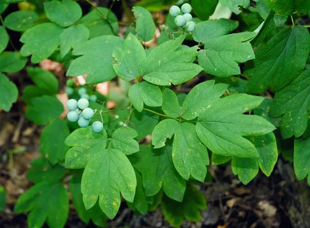

Oh no! You're out for a walk and just realized you forgot your lunch! Luckily, you recognize a couple of the plants that grow around here. Let's see...what are they useful for? Oh! You remember:
American Spikenard: you can eat the berries raw or cooked; the root can treat asthma and burns, and can also be a substitute for sarsaparilla in homemade root beer.
Blue Cohosh: if you remove the berry and roast the seed inside, it is a coffee substitute; some Native American women have also used a tincture of the root as an
aid in childbirth.
Go find these plants by looking at the signs you see in the garden beds. Take a look at which berries are growing on which plant, and if the berries aren't out yet, check out the paper guide by the entrance to the garden. Once you know what these two plants look like, look at the options below. Which of these berries should you pick for your woodland lunch?
